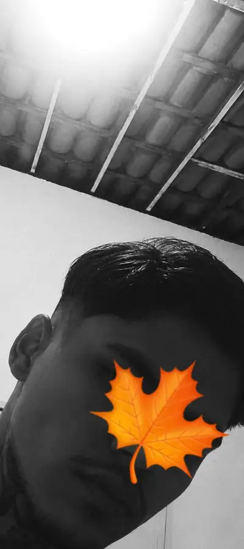

UM DOS NOSSOS MOMENTOS ♥JOÃO × SOPHIA — NOSSAS MEMÓRIAS
NOSSA
galeria.
Um lugar separado só para guardar nossos momentos.
Removi as imagens que estavam aparecendo quebradas/corrompidas. Vou deixar aqui somente arquivos que carreguem corretamente para a galeria não ficar estranha.